Chapter 8 Legends
8.1 Introduction
In this chapter, we will learn how to:
- position the legend within the plot
- modify the layout using
ncolandhorizarguments - add title using the
titleset of arguments - modify the appearance and position of the legend box
- modify the appearance of the text in the legend box
Legends are used to convey information about the data being represented by a plot. To understand the importance of legends, let us look at the two plots below. In the first plot, would you be able to understand what the lines represent in the absence of a legend? May be yes but only if the author provides information in a textual form outside the plot. While such information will be useful, it will also be very inconvenient. Now look at the second plot, from the legend at the top right we can easily interpret what the lines represent. Would you agree that a legend is integral to plot representing multiple data? If yes, let us go ahead and learn how to add a legend to different plots.
Since we have looked at a line graph in the above example, we will learn how to add a legend to a line graph. After that, we will generalise the steps to different plots.
8.2 Data
Let us build a line graph that represents annual economic growth (GDP) data of the BRICS nations for the years 2010-14.
year <- seq(2010, 2014, 1)
india <- c(10.3, 6.6, 5.6, 6.6, 7.2)
china <- c(10.6, 9.5, 7.8, 7.7, 7.3)
russia <- c(4.5, 4.3, 3.5, 1.3, 0.7)
brazil <- c(7.5, 3.9, 1.9, 3.0, 0.1)
s_africa <- c(3.2, 3.2, 2.2, 2.2, 1.5)
gdp <- data.frame(year, india, china, russia, brazil, s_africa, stringsAsFactors = FALSE)
gdp## year india china russia brazil s_africa
## 1 2010 10.3 10.6 4.5 7.5 3.2
## 2 2011 6.6 9.5 4.3 3.9 3.2
## 3 2012 5.6 7.8 3.5 1.9 2.2
## 4 2013 6.6 7.7 1.3 3.0 2.2
## 5 2014 7.2 7.3 0.7 0.1 1.58.3 Line Graph
Below is the line graph that represents the above GDP data set:
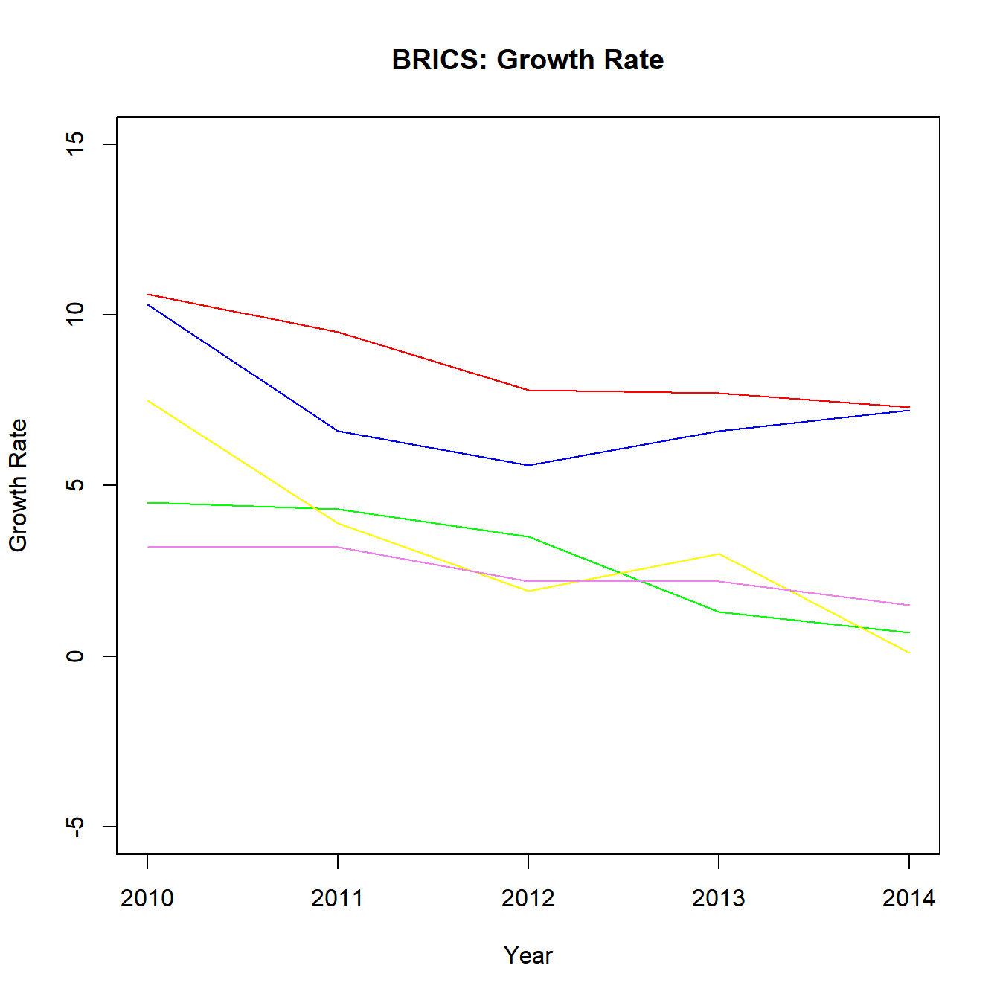
Without a legend, it will be very difficult to map the lines to the BRICS nations. We will add a legend to the above plot using the legend() function and do so one step at a time.
8.4 Legend Location
In order to add a legend to the plot, the first thing we must specify is the location of the legend in the plot. There are 2 ways to do this:
- use x and y axis coordinates
- use keywords
The list of keywords include:
- top
- bottom
- left
- right
- center
- bottomright
- bottomleft
- topright
- topleft
But there is a glitch. If we do not specify what goes into the legend, the legend() function will return an error. Before we experiment with the location of the legend inside the plot, we need to learn about another argument used to specify the content of the legend. The argument is also named legend. It takes a vector as input. In the next example, we will plot the GDP data for India and China and add a basic legend.
{plot(gdp$year, gdp$india, type = 'l',
ylim = c(-5, 15), xlab = 'Year',
ylab = 'Growth Rate', col = 'blue',
main = 'BRICS: Growth Rate')
lines(gdp$year, gdp$china, col = 'red')
legend(x = 2013, y = 14, legend = c('india', 'china'))}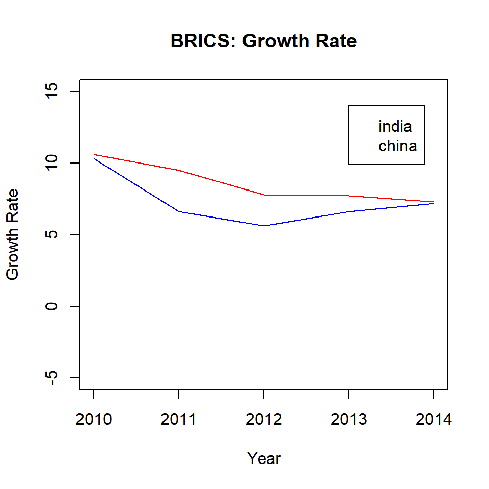
You can see that a legend has been added bases on the X and Y axis coordinates we specified in the legend() function. But the legend is incomplete and a user still cannot map the lines to the countries using the legend. We will learn how to add lines inside the legend shortly but before that let us use keywords to position the legend inside the plot.
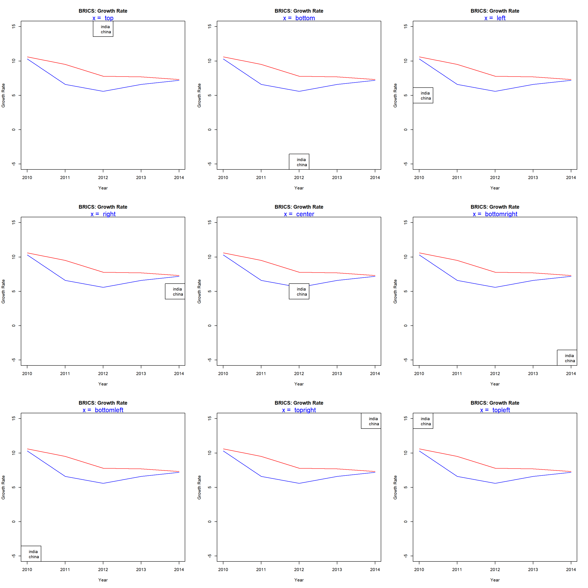
You can either use the keywords or the axis coordinates to position the legend inside the plot. Use the coordinates method if you want greater control over the position of the legend. Next step is to add lines inside the legend so that a user can map the lines in the plots to the countries.
8.5 Lines
Adding a line in the legend is very simple. Use the lty argument to specify the line type and the col argument to add color to the line.
{plot(gdp$year, gdp$india, type = 'l',
ylim = c(-5, 15), xlab = 'Year',
ylab = 'Growth Rate', col = 'blue',
main = 'BRICS: Growth Rate')
lines(gdp$year, gdp$china, col = 'red')
legend(x = 2012, y = 14, legend = c('india', 'china'),
lty = 1, col = c('blue', 'red'))}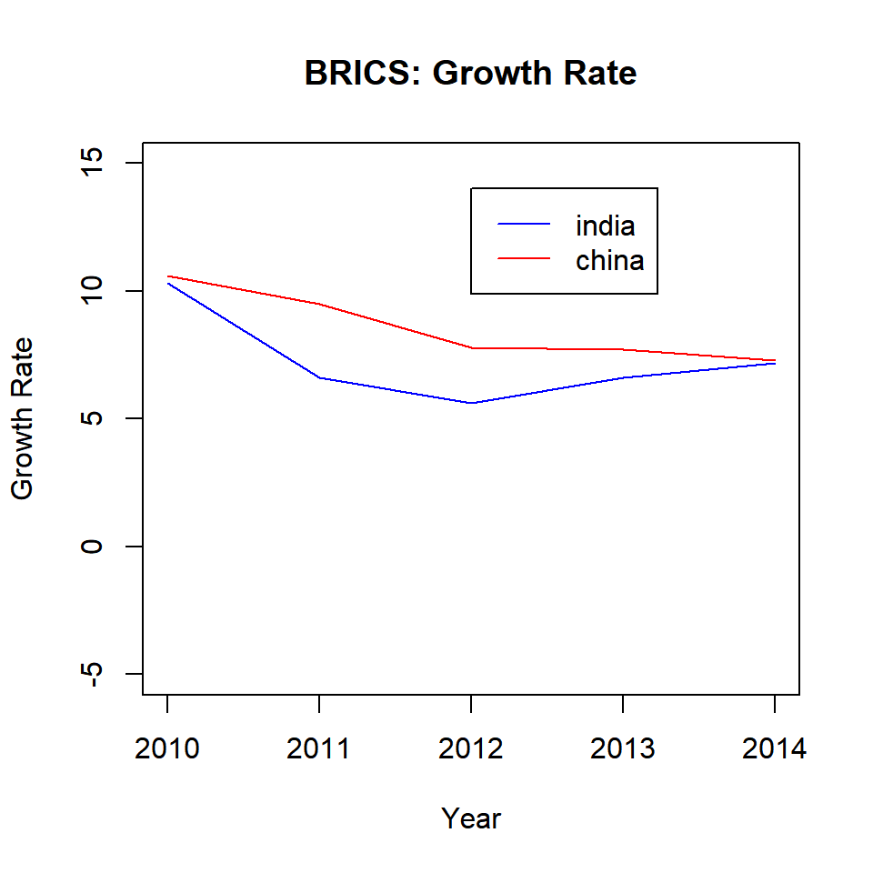
Now we can map the lines to the respective countries using the legend. But our legend looks very simple right. Let us explore the options available to modify and enhance the appearance of the legend.
8.6 Points
If the plot has both lines and points, we can use the pch argument in the legend() function to specify the shape of the point.
{plot(gdp$year, gdp$india, type = 'l',
ylim = c(-5, 15), xlab = 'Year',
ylab = 'Growth Rate', col = 'blue',
main = 'BRICS: Growth Rate')
points(gdp$year, gdp$india, pch = 2, col = 'blue')
lines(gdp$year, gdp$china, col = 'red')
points(gdp$year, gdp$china, pch = 2, col = 'red')
legend(x = 2012, y = 14, legend = c('india', 'china'),
lty = 1, pch = 2, col = c('blue', 'red'))}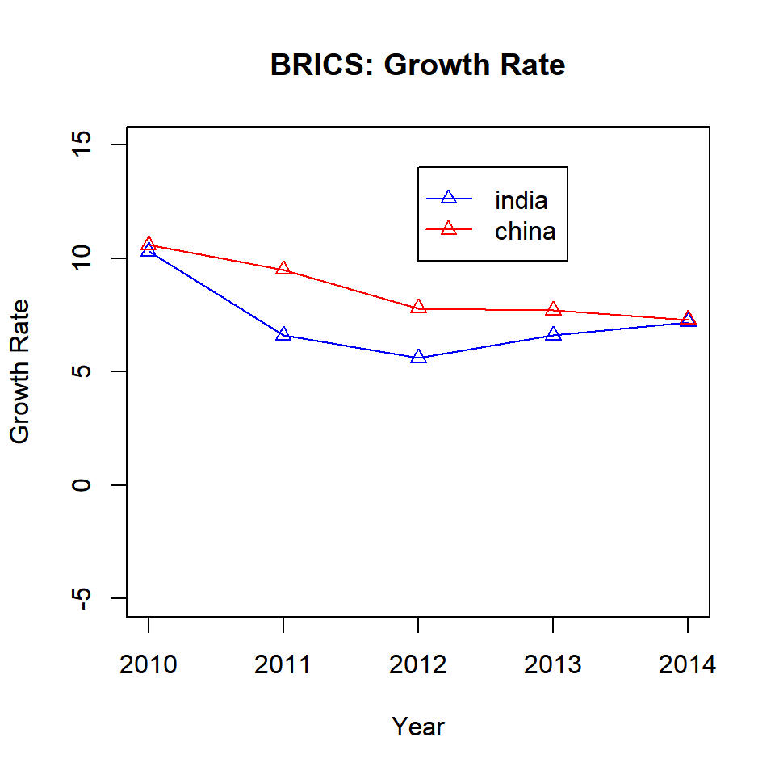
8.7 Text Placement
The contents of the legend can be positioned horizontally using the horiz argument. It takes logical values as inputs and the default is FALSE. Set it to TRUE to position the contents horizontally:
{plot(gdp$year, gdp$india, type = 'l',
ylim = c(-5, 15), xlab = 'Year',
ylab = 'Growth Rate', col = 'blue',
main = 'BRICS: Growth Rate')
lines(gdp$year, gdp$china, col = 'red')
legend(x = 2011, y = 14, legend = c('india', 'china'),
lty = 1, col = c('blue', 'red'),
horiz = TRUE)}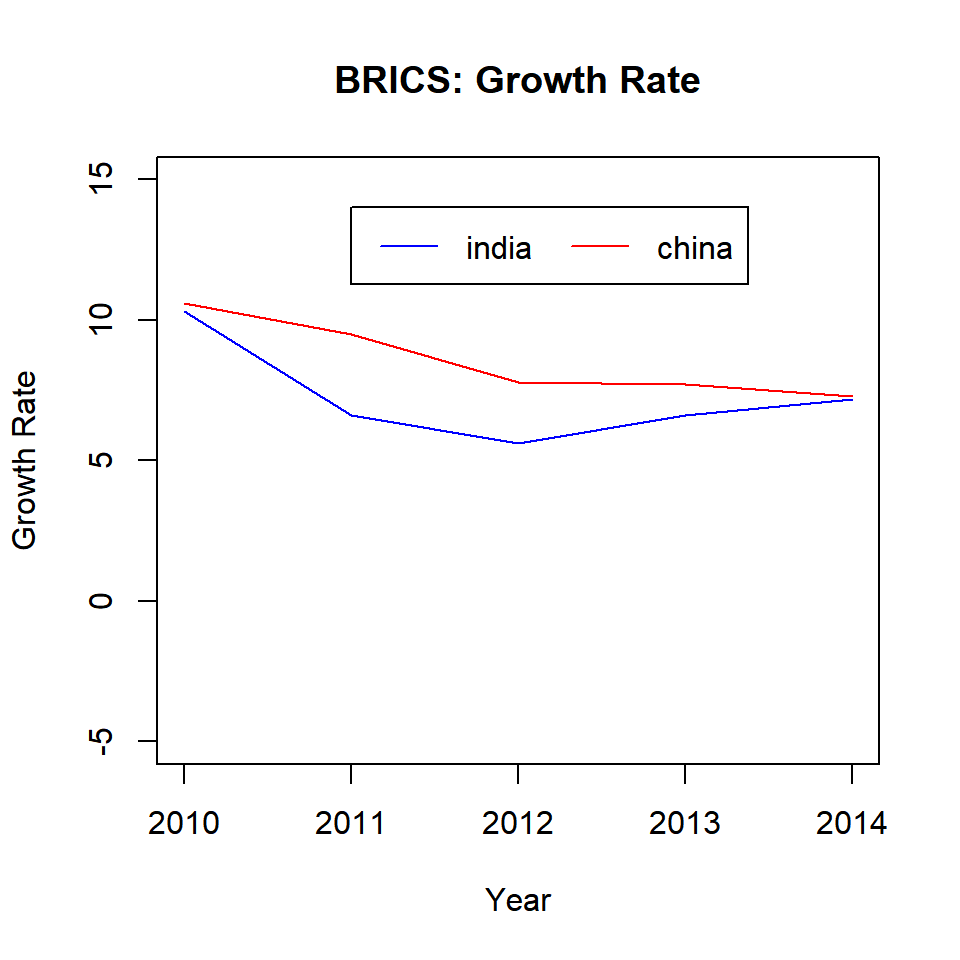
Another way to position the content inside the legend is to use columns. In the below example, we use the ncol argument to split the contents of the legend into two columns instead of the default one.
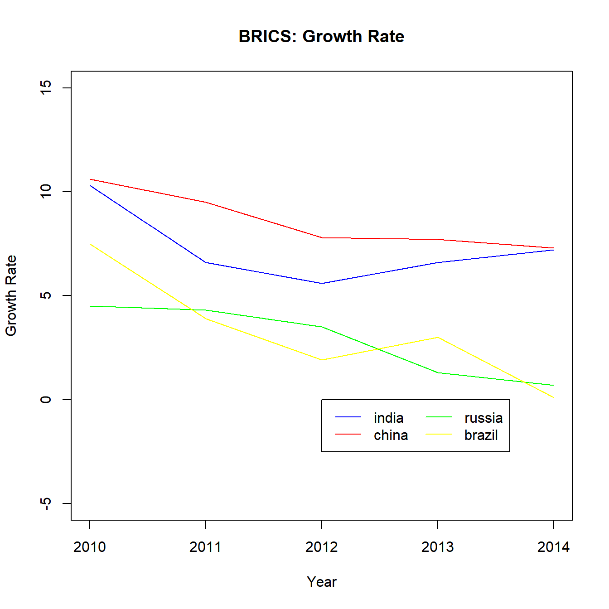
The below plots show the difference in appearance:
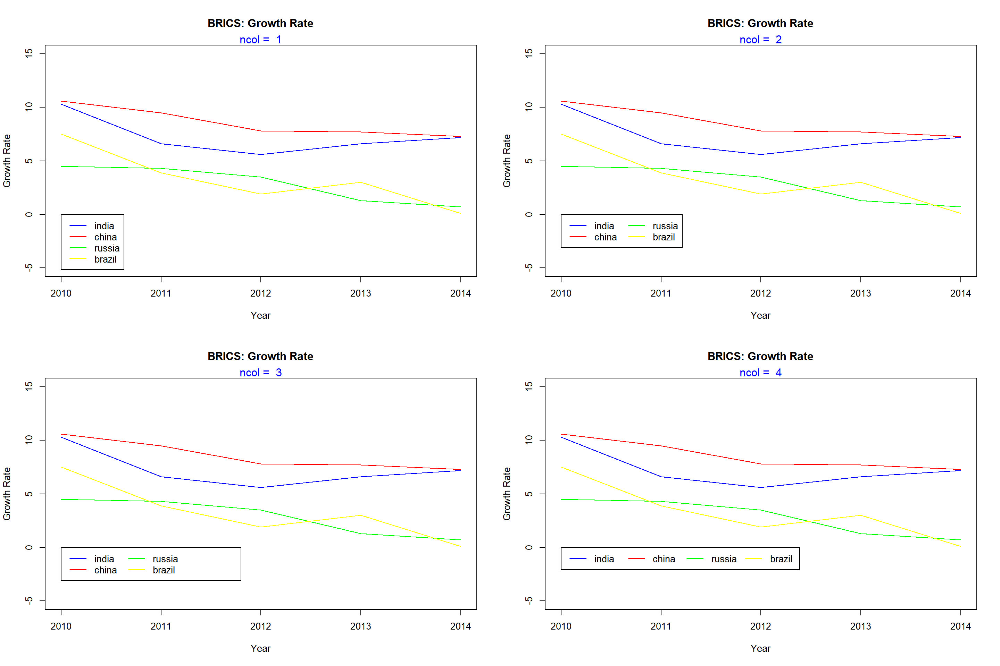
8.8 Title
Let us add a title to the legend using the title argument:
{plot(gdp$year, gdp$india, type = 'l',
ylim = c(-5, 15), xlab = 'Year',
ylab = 'Growth Rate', col = 'blue',
main = 'BRICS: Growth Rate')
lines(gdp$year, gdp$china, col = 'red')
legend(x = 2012, y = 14, legend = c('india', 'china'),
lty = 1, col = c('blue', 'red'),
title = 'Nations')}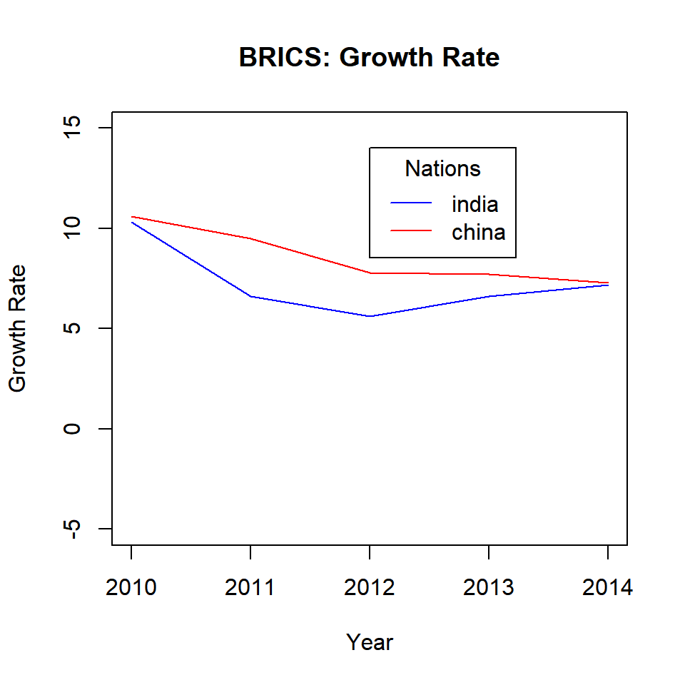
8.8.1 Title Color
The color of the title can be modified using the title.col argument:
{plot(gdp$year, gdp$india, type = 'l',
ylim = c(-5, 15), xlab = 'Year',
ylab = 'Growth Rate', col = 'blue',
main = 'BRICS: Growth Rate')
lines(gdp$year, gdp$china, col = 'red')
legend(x = 2012, y = 14, legend = c('india', 'china'),
lty = 1, col = c('blue', 'red'),
title = 'Nations', title.col = 'red')}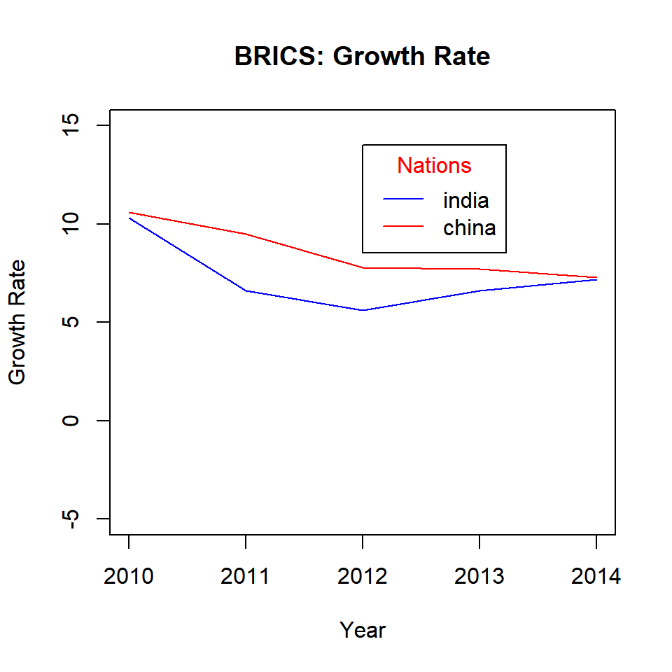
8.8.2 Title Position
The title can be positioned within the legend box using the title.adj argument. It will take values between 0 and 1. The default is 0.5 and the title is positioned in the middle of the box. As the value moves away from 0.5, the position of the title moves to the left or right respectively.
{plot(gdp$year, gdp$india, type = 'l',
ylim = c(-5, 15), xlab = 'Year',
ylab = 'Growth Rate', col = 'blue',
main = 'BRICS: Growth Rate')
lines(gdp$year, gdp$china, col = 'red')
legend(x = 2012, y = 0, legend = c('india', 'china'),
lty = 1, col = c('blue', 'red'), horiz = TRUE,
title = 'Nations', title.adj = 0.1)}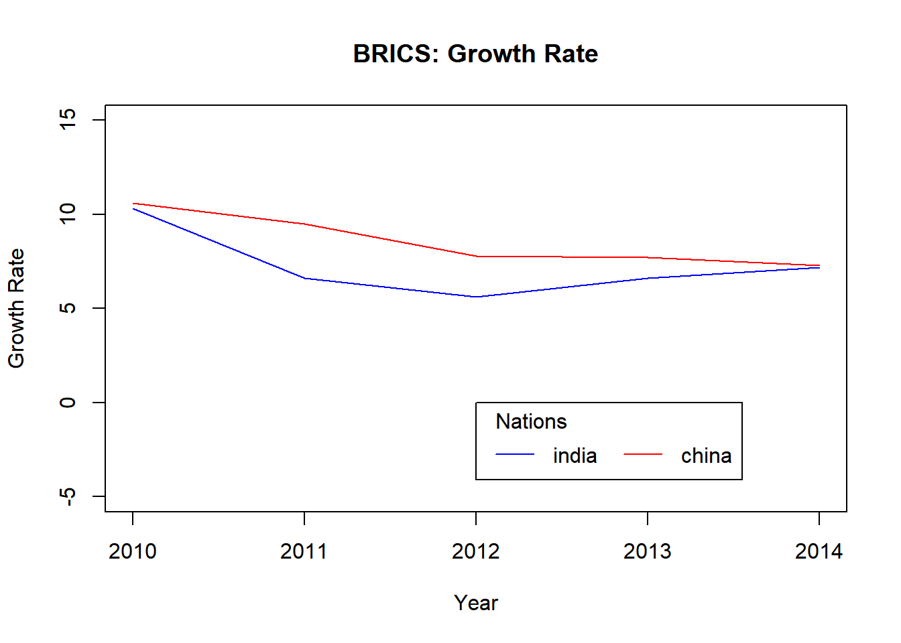
The below plots show the relative position of the title within the legend box for different values between 0 and 1.
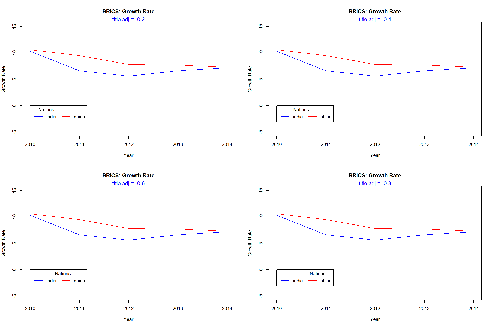
8.9 Box Appearance
There are a lot of options to modify the appearance of the legend box. The below table displays the arguments and their descriptions. Let us look at them one by one:
| option | argument | values |
|---|---|---|
| Box Type | bty | o, n |
| Background Color | bg | blue, #0000ff |
| Border Line Type | box.lty | 1:5 |
| Border Line Width | box.lwd | 0.5, 1, 1.5 |
| Border Line Color | box.col | blue, #0000ff |
| Horizontal Justification | xjust | 0:1 |
| Vertical Justification | yjust | 0:1 |
| Text Color | text.col | blue, #0000ff |
| Text Font | text.font | 1:5 |
8.9.1 Box Type
The bty argument takes two values, o and n. If set to n, there will be no box around the legend.
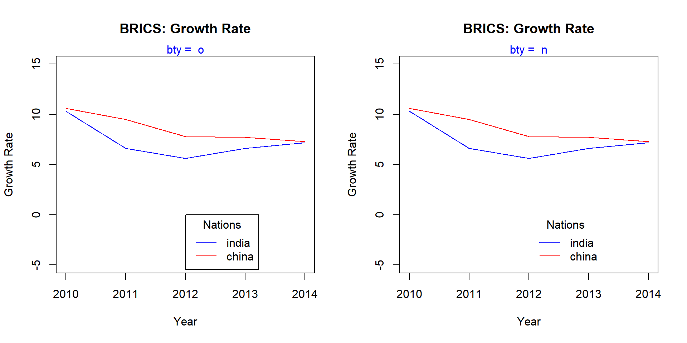
8.9.2 Background Color
A background color can be added to the legend box using the bg argument. Below is an example:
## function (...) .Primitive("c")8.9.3 Border
The following arguments can be used to modify the border of the legend box:
box.lty: line typebox.lwd: line widthbox.col: color
{plot(gdp$year, gdp$india, type = 'l',
ylim = c(-5, 15), xlab = 'Year',
ylab = 'Growth Rate', col = 'blue',
main = 'BRICS: Growth Rate')
lines(gdp$year, gdp$china, col = 'red')
legend(x = 2012, y = 0, legend = c('india', 'china'),
lty = 1, col = c('blue', 'red'), title = 'Nations',
box.lty = 3, box.lwd = 1.5, box.col = 'green')}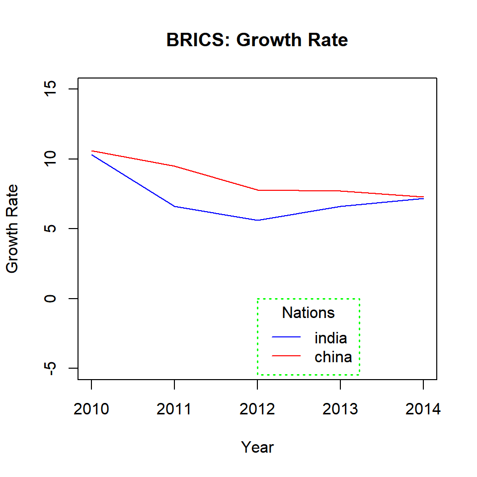
8.10 Justification
The xjust and yjust arguments can be used to position the legend relative to the X and Y axis respectively. Listed below is the value and the respective justification:
0: left justified0.5: centered1: right justified
Let us look at a few examples to understand how it works.
8.10.1 Horizontal Justification
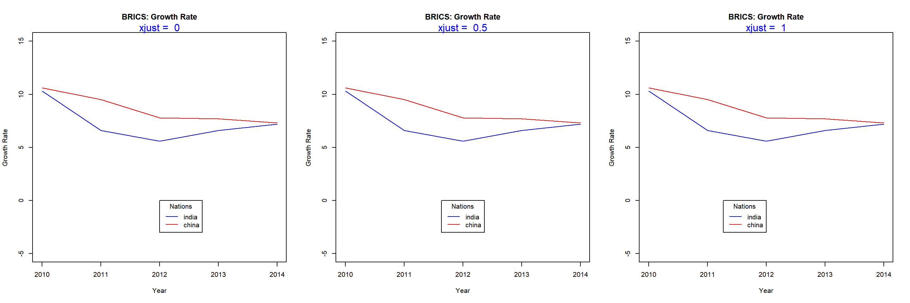
8.10.2 Vertical Justification
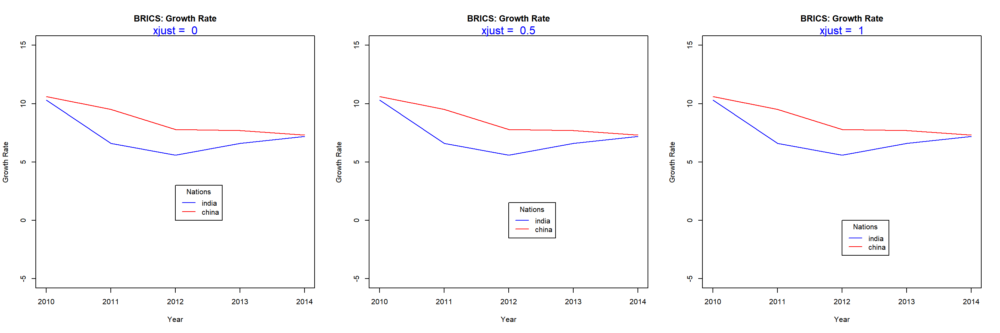
8.11 Text Appearance
The last topic we will explore is the appearance of the text inside the legend box. We will modify the color and font of text using the text.col and text.font arguments.
{plot(gdp$year, gdp$india, type = 'l',
ylim = c(-5, 15), xlab = 'Year',
ylab = 'Growth Rate', col = 'blue',
main = 'BRICS: Growth Rate')
lines(gdp$year, gdp$china, col = 'red')
legend(x = 2012, y = 0, legend = c('india', 'china'),
lty = 1, col = c('blue', 'red'), title = 'Nations',
text.col = 'green', text.font = 3)}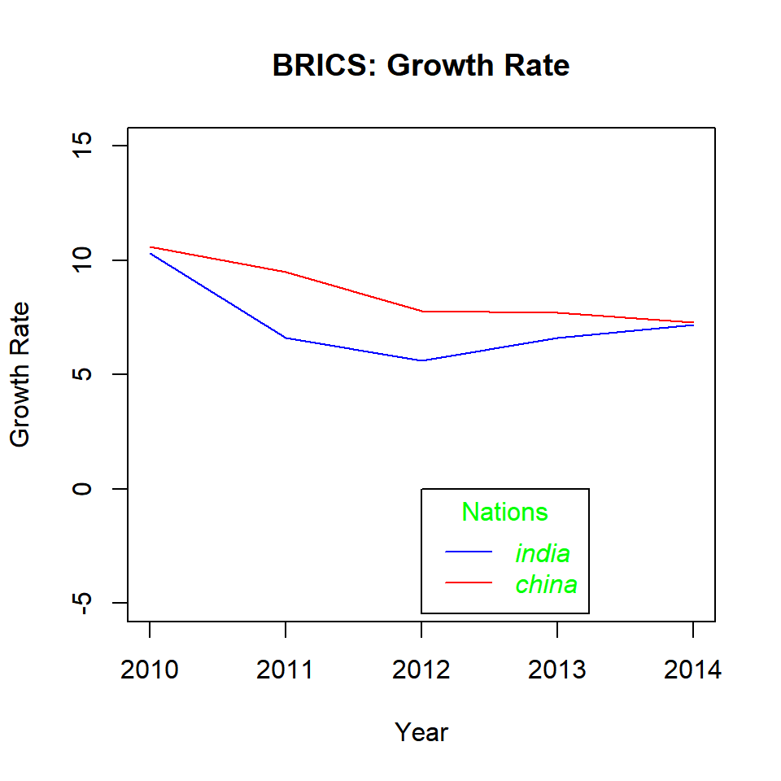